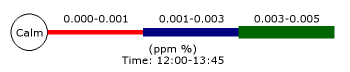

JpGraph Windrose Manual
Table of Contents
1 Windrose plots with JpGraph 2 Basic formatting of Windrose graphs
- 2.1 Basic types of windrose plots
- 2.2 Specifying input data
- 2.2.1 Examples of input data for compass (regular) Windrose plots
- 2.2.2 Examples of input data for free Windrose plots
- 2.3 Specifying the windrose scale
- 2.3.1 Specifying fonts and font colors
- 2.3.2 Manually specifying the scale
- 2.3.3 Specifying the label angle
- 2.3.4 Specifying number formats for scale labels
- 2.4 Specifying direction labels
- 2.4.1 Specifying fonts and font colors
- 2.4.2 Setting arbitrary text for data directions
- 2.4.3 Adjusting the alignment and margin
- 2.5 Adjusting the size and position of the graph
- 2.5.1 Positioning the plot
- 2.5.2 Specifying the size of the plot
- 2.5.3 Specifying the size of the Zero-circle (middle circle)
- 2.6 Adding multiple plots to the same graph
- 2.7 Formatting the legend
- 2.7.1 Specifying legend fonts
- 2.7.2 Setting text and colors for the Zero-circle
- 2.7.3 Specifying number formats for ranges
- 2.7.4 Specifying legend bottom text
- 2.7.5 Specifying the numeric values displayed for the ranges
- 2.8 Adjusting the formatting of the windrose plot legs
- 2.9 Adding arbitrary text on the graph
- 2.10 Writing the windrose plot to a file
- 3.1 Turning off Anti-aliasing
- 3.2 More on formatting scale-labels
- 3.2.1 Adding background colors
- 3.2.2 Adjusting the alignment of the scale labels
- 3.2.3 Specifying number formats
- 3.2.4 Specifying a manual scale
- 3.2.5 Hiding the labels
- 3.2.6 Specifying the Zero-circle label
- 3.3 Formatting the legend
- 3.3.1 Turning off the legend
- 3.3.2 Adjusting the legend position
- 3.3.3 Adjusting the length of each legend window leg
- 3.4 Formatting the windrose plot
- 3.4.1 Adjusting the grid colors
- 3.4.2 Adjusting the weight of the grid circles
- 3.4.3 Adding a box around the plot
- 3.5 Including a graph in a PDF
- 3.6 Highlighting specific compass directions
- 3.7 Miscellaneous formatting
- 3.8 Adding a background image
- 3.9 Adjusting the interpretation for ordinal keys in data
- 3.10 Localizing the default names for the compass directions
- 3.11 Adding a rectangle around an individual plot
- 4.1 Example 1
- 4.2 Example 2
- 4.3 Example 3
- 4.4 Example 4
- 4.5 Example 5
- 4.6 Example 6
- 4.7 Example 7
- 4.8 Example 8
- 4.9 Example 9
1 Windrose plots with JpGraph
1.1 Introduction
Windrose plots are usually used to display values which are related to compass directions. For example it could be used to illustrate measured wind strengths over a time period in different directions. Figure 1. Illustrates a simple example of a windrose plot which should give a good idea on what windrose plots are all about.
Figure 1. A basic windrose plot
As you can see the use of windrose plots puts data in a number of ranges, for example the number of measurements in range 0-1, range 1-2 and so on. By default the available ranges are:
0-1, 1-2, 2-3, 3-5, 5-6, 6-10, 10-13.5, 13-99
This series can of course be modified to suit the particular applications. The default ranges is often used to show wind strengths in different directions.
Note: The default fonts for Windrose graphs are TTF fonts.
This means that to run the examples exactly as shown in this tutorial
you must have TTF fonts installed in your setup. If TTF fonts are not
available you need to adjust the fonts used to one of the builtin
fonts, for example "SetFont(FF_FONT2)", on all places where fonts are
used.
In order to use the enhanced Anti-alias features in Windrose graphs
you must have TTF fonts installed.
1.2 Features
The Windrose extension module for JpGraph has all the usual JpGraph capabilities like frames, shadows and full use of all available colors and alpha-blending supported by the core JpGraph library. Some of he additional Windrose graphs capabilities are:
- Enhanced anti-alias capability for smooth looking graphs
- Manual or automatic scale
- Supports customizable compass types which allow you to choose between 16,8 and 4 compass directions to be shown.
- Supports two types of basic graphs; Free direction graphs and compass bound graphs.
- Allows data to be specified with both compass direction and angles
- Fully customizable fonts everywhere in the plot
- Fully automatic adaptive positioning of the labels for the scale to avoid collision with data. This can also be turned off to allow manual positioning of the labels.
- Labels have extensive formatting capabilities and supports background colors, rounded boxes and arbitrary fonts.
- Supports multiple Windrose graphs on the same image
- Fully customizable size and positioning of each individual windrose graph.
- Size of windrose plots can be specified both as absolute pixels or as fraction of the graph size.
- Both manual and automatic color specifications
- Both automatic and manual scaling
- Intelligent positioning of angle labels with possibility for client specification of alignment type.
- Windrose graphs may have arbitrary texts blocks added to the graph
1.3 A first introductory windrose graph
To get a quick start we now show the creation of the simplest of all Windrose graphs. Creation of windrose graphs follows the generic graph creation schema in JpGraph, i.e.
- Include the necessary extension module jpgraph_windrose.php
- Create a Windrose Graph
- Add any number of Windrose plots to the graph
- Send the graph to the browser or to a file.
The following code example show the simplest of all windrose graphs
using just the default values for all parameters.
require_once ('../jpgraph.php');
require_once ('../jpgraph_windrose.php');
//---------------------------------------------------------
// Data can be specified using both ordinal index of the axis
// as well as the direction label
//---------------------------------------------------------
$data = array(
0 => array(1,1,2.5,4),
1 => array(3,4,1,4),
'WSW' => array(1,5,5,3),
'N' => array(2,3,8,1,1),
15 => array(2,3,5));
// First create a new windrose graph with a title
$graph = new WindroseGraph(400,400);
$graph->title->Set('Windrose example 0');
// Create the windrose plot.
$wp = new WindrosePlot($data);
$graph->Add($wp);
// Send the graph to the browser
$graph->Stroke();Worth noting in the code above is:
- All the usual features of JpGraph is available, for example 'title' property.
- Direction for data can be specified as both Compass directions and as angles. Note: If you need to specify fractions of an angle, e.g. 52.5, this must be specified as a string, e.g. '52.5' => array(1,2,3,4).
The result of running the script above can be seen below in figure 1.
Figure 1. A basic windrose graph
Note: The data in all the following examples (including the example just presented) are entirely fictitious. For real data the sum of all the values should always sum up to 100%. However, the plot library does not put any restrictions on the data. It is entirely the responsibility of the client to the library to ensure that the data presented makes sense.
2 Basic formatting of Windrose graphs
2.1 Basic types of windrose plots
There are two basic types of Windrose plots:
- Compass type with either 4,8 or 16 compass direction axis. Directions in input data is limited to one of the compass directions in the plot. The directions can be specified as ordinal number of the axis counted. The labels on the axis is by default short forms of the compass directions, for example, "E", "N", "W", "S". (In the advanced section we show how you can alter the default names of the directions.). The ordinal number are counted anti-clockwise from East.
- Free type with no pre-defined direction axis. Directions in input data can be arbitrary angles (or specified as compass directions e.g. "NW"). The 0-angle corresponds to the East direction.
To specify the type of plot to create the method WindrosePlot::SetType() is used. The argument is one of the 4 predefined constants which are listed below with an explanation.
- WINDROSE_TYPE4, Compass type with the four core compass directions
- WINDROSE_TYPE8, Compass type with eight directions
- WINDROSE_TYPE16, Compass type with sixteen directions
- WINDROSE_TYPEFREE, Free type. Data directions can be arbitrary angles and there are no predefined labels nor any pre-defined axis.
The figures below illustrates the basic principle of the different types.

Figure 2a. WINDROSE_TYPE4 | 
Figure 2b. WINDROSE_TYPE8 |

Figure 2c. WINDROSE_TYPE16 | 
Figure 2d. WINDROSE_TYPEFREE |
So, for example to use a Windrose plot with all 16 compass angles
you have to code along the lines of
...
$wp = new WindrosePlot($data);
$wp->SetType(WINDROSE_TYPE16);
...
Note: If no type is specified the plot type will default to a compass type with 16 directions/axis.
2.2 Specifying input data
Input data is in the form of a data array. Each entry in the array is itself an array which gives the data for one direction. The direction is specified as the key for that element. The direction can be specified as either
- A string specifying any of the displayed compass directions, e.g. "N", "SW" and so on.
- An ordinal number in the range 0-15 for regular plots which indicates the axis counting anti-clockwise from East. Please note that only displayed axis count so of you are displaying 4 axis then a position of 1 indicates north while if you are displaying 16 axis then a position of 1 indicates "ENE" (East North East)
- A string indicating a number, e.g. '34.5' , please note that if the angle is a fraction you must specify such a direction as a string. The library will then automatically recognize that as a valid angle and treat it as expected. The reason for this is of course that floating point numbers can't be used as keys in an associative array.
If you specify a direction in the data for a compass directions that is not displayed when using a regular Windrose plot you will get an error message to that affect.
As previously said each array element is itself an array which normally specifies the percentage for each used range in that direction starting with the percentage of 0-readings.
By default the available ranges are:
0-1, 1-2, 2-3, 3-5, 5-6, 6-10, 10-13.5, 13-99
This means that the first element specify the percentage of 0-1 reading the sum of these reading will be placed in the center of the windrose plot. The second element specifies the percentage of 1-2 readings, the third element the percentage of 2-3 readings and so on.
Below are some examples of how to specify the data which should clarify how this works.
2.2.1 Examples of input data for compass (regular) Windrose plots
(Assuming we have all 16 axis displayed)
$data = array( "N" => array(2,5,6) );
This data array specifies reading in only one direction, "North",
the number of 0-readings are 2 percent, number of 0-1 readings are 5
percent and the number of 1-2 readings are 6 percent.
$data = array( 1 => array(2,5,6), 3 =>
array(6,3), "NW" => array(3,2,2,2) )This data array specifies readings in three directions. As shown it is possible to mix both ordinal number for the axis as well as the symbolic direction name.
2.2.2 Examples of input data for free Windrose plots
What is special with the free type is that angles are no longer
restricted to only the 16 compass directions but arbitrary directions
as well.
$data = array( 10 => array(2,5,6), 24 =>
array(6,3), 137 => array(3,2,2,2) ) This data array specifies readings in three directions, 10 degrees,
24 degrees and 137 degrees.
$data = array( "21.6" => array(2,5,6),
"N" => array(6,3), 137 => array(3,2,2,2) ) This data array specifies readings in three directions, 21.5
degrees, "North" (or 90 degrees) and finally 137 degrees. Please note
that in order to specify a fraction for an angle we must specify the
direction as a string value, i.e. '21.6'. This will then be handled
automatically be the library.
2.3 Specifying the windrose scale
The scale consists of the epi-centric circles that radiates from the center of the Windrose plot. The step between each circle can be either set manually (with a call SetStepSize()) or it can be automatically determined. By default the library tries multiple of 5:s and 2:s for a visually esthetic grid spacing.
All properties of the scale is accessed through the "scale" property of the Windrose plot, for example as in $windplot->scale->SetFont(...)
2.3.1 Specifying fonts and font colors
Fonts can be specified for both the labels on the scale as well as
separately for the label in the middle of the plot. The following code
snippet shows how to do this (we assume we have already created a
windrose plot called windplot)
// Font and color for scale labels
$windplot->scale->SetFont(FF_VERDANA,FS_NORMAL,10);
$windplot->scale->SetFontColor('navy');
// Font and color for the center (Zero circle) label
$windplot->scale->SetZFont(FF_VERDANA,FS_NORMAL,10);
$windplot->scale->SetZFontColor('navy');
2.3.2 Manually specifying the scale
By default the library automatically determines a scale range and step size taking into account the maximum value of data, size of the plot and the font size specified for the scale labels.
However you can force a manual scale and step size with a call to
Set($aMaxValue,$aStepSize). This call sets the maximum scale value
as well as the step size. The step size is optional. If the stepsize is
not specified it will be automatically determined.
// Specify both maximum value and a step
size
$windplot->scale->Set(40,8);
...
// Specify just the maximum value
$windplot->scale->Set(40);This feature is also illustrated in Example 7 in the Appendix of this manual.
Note 1: The automatic scaling tries to first use step
sizes as multiples of 5 and then multiples of 2 to achieve a suitable
spacing of the scale lines.
Note 2: You might be surprised to see that the scale steps may
change as you change the font for the scale labels. This is by design.
The reason for this is of course that there is only a certain amount of
space available for the labels between each step. In order for large
fonts to fit the space between the grids must be large enough.
2.3.3 Specifying the label angle
The labels for the scale is placed along a line radiating from the center of the windrose plots. The angle for the labels can be either manually or automatically determined.
The labels for the scale is placed along one of the sixteen compass directions if you choose automatic positioning of the labels. By default the library tries to choose a direction with as little data around it as possible.
To manually specify the angle a call to SetAngle($aAngle) with the angle (in degrees) as argument and to let the library try to automatically determine the angle the argument should be 'auto' which also is the default.
The code snippet below shows how to do this
// Show the labels at 45 degrees angle
$windplot->scale->SetAngle(45);Figure 3 below shows examples of specifying different angles for the scale labels
|
Figure 3a. Labels at angle=20 degrees |
Figure 3a. Labels at angle=150 degrees |
2.3.4 Specifying number formats for scale labels
2.4 Specifying direction labels
With direction labels we mean the names of the compass directions surrounding the windrose plot. By default they are given the English short form for the 16 compass named directions. This can also be localized as described in the "Advanced formatting section".
2.4.1 Specifying fonts and font colors
Fonts are specified, as usual, with a call to
WindrosePlot::SetFont() and the color is specified with a call to
WindrosePlot::SetFontColor() as the following example shows
$windplot->SetFont(FF_TIMES,FS_BOLD,12);
$windplot->SetFontColor("darkgreen");Which for example could give a Windrose plot as shown in Figure 4.
Figure 4. Using dark green Times TTF fonts for
Compass directions
2.4.2 Setting arbitrary text for data directions
Wen using the free direction windrose plots the default label is the direction for the data in degrees. This is fully customizable by using the Windrose::SetLabels() method. The input data to this method is an associative array where the keys are the direction and the content is the text to be displayed.
Please note that for regular Windrose plots, i.e. with only compass direction the label can not be changed. This is only available if the type of the windrose plot is WINDROSE_TYPEFREE.
The following example specifies a data point at 50 degrees and a
text "Point\n#7315" as the label. Note that labels can contain "\n"
which will be interpreted as a line break.
$data = array( 50 => array(12,12,2) );
$labels = array( 50 => "Point #7315" );
...
$windplot = new WindrosePlot();
$windplot->SetLabels($labels);
...Which would then give the result in figure 5.

Figure 5. Specifying a custom compass direction
label
2.4.3 Adjusting the alignment and margin
There are two basic ways of adjusting the position of the compass labels around the plot:
- Adjusting the margin between the label and the outer plot circle
- Adjusting the anchor point of the labels.
The easiest way to explain this is to first imagine an invisible circle around the plot. The margins specifies how far from the outer scale circle this imaginative circle is placed.
In order to position the labels on that circle around the plot there are several possible ways to select what point of the text should be positioned on the circle. The easiest way is to select the center (both in X and Y directions) of the text. This works well if all labels are roughly the same size. If there are big difference between the smallest and largest label it might be necessary to have a very large margin to avoid the text to "collide" with the plot.
A better way is to determine the closest point of the text to the plot and then make that point lay on the circle. The closets point depends on what compass direction the label is on, for example for the "East" label the closes point is the middle of the left side of the text and for the "West" the closes point is the middle of the right side.
JpGraph supports both way of positioning through the method
WindrosePlot::SetLabelPosition($aPosition) Valid values for
$aPosiion are LBLPOSIITON_CENTER and LBLPOSITION_EDGE
. The following code snippet shows how to specify both margin and
position do this:
...
$windplot->SetLabelMargin(30);
$windplot->SetLabelPosition(LBLPOSITION_EDGE);
...The red circle in figure 6a and b illustrates the "imaginative" circle on which the labels are placed. The distance from the outmost plot circle to the label anchor point is the margin.

Figure 6a. Positioning of the labels using LBLPOSITION_CENTER (The anchor position for the text is the center of gravity of the text) | 
Figure 6b. Positioning of the labels using LBLPOSITION_EDGE (The anchor position for the text is the intersection between the text bounding box and the line between the center of the plot and the center of gravity of the text |
2.5 Adjusting the size and position of the graph
2.5.1 Positioning the plot
The position of the graph can be controlled with the
WindrosePlot::SetPos($aXPos,$aYPos). The position can be specified
as either absolute position (in pixels) or as a fraction of width and
height. The anchor for the position is the center of the windrose plot.
For example, the following line centers the plot in the graph
...
$windplot->SetPos(0.5,0.5);
...2.5.2 Specifying the size of the plot
In the same way as for the position the size of the windrose plot can be specified as either an absolute value or as a fraction of the minimum of width and height. The size specified refers to the diameter of the plot.
The size is controlled with the WindrosePlot::SetSize($aDiameter)
method as in
...
$windplot->SetSize(200);
...The code above sets the diameter of the plot to 200 pixels, setting the value to 0.7 would set the diameter to 0.7 * min(WIDTH,HEIGHT) where width and height are the size of the graph.
2.5.3 Specifying the size of the Zero-circle (middle circle)
The size of the middle circle (the zero-range circle) can be adjusted
with the method WindrosePlot::SetZCircleSize($aDiameter); The
diameter can be specified as either an absolute integer value or as a
fraction of the windrose plot diameter. For example the following line
sets the size to 1/3 of the windrose plot.
...
$windplot->SetZCircleSize(1/3);
...In figure 7 below we illustrate the effect of changing the zero circle size
|
Figure 7a. Setting the Zero-circle size to 0.3 |
Figure 7b. Setting the Zero-circle size to 0.5 |
2.6 Adding multiple plots to the same graph
Adding several windrose plots to the same graph is as simple as adding one. You just need to create your chosen number of plots and then add them with a call to WindroseGraph::Add().
To avoid all the plots to collide in the middle just use the
positioning and sizing methods as shown in the previous section. The
following script snippet shows how to add two plots to the same graph.
In order not to cloud the example we have omitted the lines that set
the font sizes.
...
$graph = new WindroseGraph(500,300);
$graph->title->Set('Example of two plots in the same graph');
// Cerate first plot
$wp = new WindrosePlot($data);
$wp->SetType(WINDROSE_TYPEFREE);
$wp->SetSize(0.5);
$wp->SetPos(0.25,0.5);
...
// Set font sizes and label positions etc
...
$graph->Add($wp);
// create 2:nd plot
$wp2 = new WindrosePlot($data2);
$wp2->SetType(WINDROSE_TYPEFREE);
$wp2->SetSize(0.5);
$wp2->SetPos(0.75,0.5);
...
// Set font sizes and label positions etc
...
$graph->Add($wp2);
$graph->Stroke();The result can be seen in figure 8 below
|
Figure 8. Multiple plots in the same graph |
2.7 Formatting the legend
The legend is displayed just below in a fixed position just below the windrose plot and you can see an example of the legend in Figure 8.
All legend methods is accessed through the legend property of
the windrose plot as in
$windroseplot->legend->SetFont(...);
There are four basic attributes that you can customize for the legend as described in the following paragraphs. (There are also some additional less used formatting which are described in the "Advanced formatting section")
2.7.1 Specifying legend fonts
To allow for maximum flexibility font can be specified for both the numerical ranges as well as for the text under the legend. In order to avoid making the legend to wide it is often desirable to use a smaller font for the ranges and a slightly larger font for the actual text under the legend (as well as inside the "calm" circle).
The fonts for the bottom text on the legend is specified through the SetTFont() The font for the ranges is specified with SetLFont() . Finally, the font to be used in the "calm" circle is specified with SetCFont().
For maximum convenience there is a also a SetFont() method which sets all the fonts in one call. Note that if you call this method after one of the individual settings previous specified (e.g. SetCFont()) they will be overwritten.
The colors for the fonts are specified in an anlogue way by using the methods SetTFontColor(), SetLFontColor , SetCFontColor()and SetFontColor
The figure below illustrates how two fonts were used for the legend. A Chinese BIG-5 font (converted to UTF-8 before displayed with iconv()) for the text the and default Arial font for the ranges.
|
Figure 9. Multiple fonts in the legend. In order to display the Chinese font the Chinese BIG-5 encoded text was first converted to UTF-8 with a call to iconv() |
2.7.2 Setting text and colors for the Zero-circle
The "Calm" circle can have it's size, line weight and color adjusted. In addition you can specify any text within the circle. By default the text "Calm" is printed inside the circle. The following methods are used to adjust these properties.
- SetCircleWeight($aWeight)
- SetCircleRadius($aRadius)
- SetCircleColor($aColor)
- SetCircleText($aTxt)
2.7.3 Specifying number formats for ranges
For the ranges you can adjust the exact specification of the numbers, with a general format string. This would allow you, for example, to choose the number of decimal values to show in the legend. The format string is specified with a call to SetFormat($aFmt). The format will be applied to both the lower and upper range value. This means that the actual legend range text in the legend will be printed as [number format]-[number format].
2.7.4 Specifying legend bottom text
Finally you can specify a text at the bottom of the legend with a call to SetText($aTxt). The text will be displayed just underneath the legend as figure 9 below shows an example of (to save space we just show the legend part of a total image).
|
Figure 10. Adding a legend text to the legend |
2.7.5 Specifying the numeric values displayed for the ranges
The values displayed in the legend for the ranges can be adjusted with
a call to WindRosePlot::SetRanges($aRanges). By default the
ranges are set to 0,1,2,3,5,6,10,13.5,99.0, this means that the
ranges printed will be 1-2, 2-3, 3-5, ....
The following example shows how to change this to the ranges
0.000-0.001, 0.001-0.003, 0.003-0.005
...
$windplot->SetRanges(array(0.001,0.003,0.005));
$windplot->SetFormat('%.3f');
...As you can se the first range is not really directly promted. It is by default indicated by the circle to the left in the legend.
You can see that in addition to setting the range we also change the format to display the decimals. Without this the default is only to show one decimal and that would show all ranges as 0.0. An example of how this might look can be seen in figure 10 below.
| 
Figure 11. Adjusting the value displayed for the ranges, as you can see the length of the "legs" in the legend automatically adjusts to become wide enough to fit the value in the ranges. |
2.8 Adjusting the formatting of the windrose plot legs
2.8.1 Specifying range colors
To adjust the colors used for each range in the plot the method
WindrosePlot::SetRangeColors($aRangeColors) as the the following
example shows
...
$windplot->SetRangeColors(array('red','navy','darkgreen','yellow'));
...If fewer colors than data ranges are specified then the colors will wrap-around.
2.8.2 Specifying the width of the plot "legs"
The weight (width) of the legs used for each range in the plot is by
default set to the range 2,4,6,8,10,12,14,16,18,20 pixels. You
can adjust that with a call to the method
WindrosePlot::SetRangeWeights($aWeights) If fewer weights than
ranges used are supplied the ranges will wrap-around. The following
example shows how to do set a larger difference in size for the legs
between the ranges.
...
$windplot->SetRangeWeights(array(2,6,10,14,18));
...2.9 Adding arbitrary text on the graph
Windrose plots support the ordinary way of adding arbitrary texts to the graph by creating an instance of Class Text for each text you want to add and then add it to the graph as normal with a call to WindroseGraph::Add().
The following code snippet shows an example of this. It will create
a boxed text in the upper right corner of the graph.
...
// Add a boxed text
$txt = new Text();
$txt->SetFont(FF_ARIAL,FS_NORMAL,10);
$txt->Set("Arbitrary text\non a\nWidrose Plot");
$txt->SetParagraphAlign('center');
$txt->SetPos(0.95,0.15,'right');
$txt->SetBox('lightyellow');
$txt->SetShadow();
$graph->Add($txt);
...Figure 12 below shows an example on how this might look.

Figure 12. Adding an arbitrary text paragraph to the windrose plot |
...
$txt = new Text('Simple string',20,20);
$graph->Add($txt);
...The snippet above adds a text at coordinates X=20, Y=20 using the default lower left corner as the text anchor point.
Note 1: To add a newline you must remember to use
double-quotes to enclose the text otherwise the "\n" will only be
interpretated literally.
Note 2: Remember that the "text align", as adjusted with
SetAlign(), specifies the anchor point for the text, i.e. what part of
the text is aligned with the specified position.
2.10 Writing the windrose plot to a file
You can easily write the image to a file by specifying a file name in
the final call to WindroseGraph::stroke(). For example as in
$graph->Stroke('windimage.png')
Remember that the file will be saved exactly under the name you specify.
3 Less used formatting
This section shows some of the more esoteric and (probably) less used formatting available in the library.
3.1 Turning off Anti-aliasing
By default anti-aliasing is enabled. This has a speed penalty together with restrictions that no background images can be used in this version of the library.
If you want to use background images or improve performance anti-aliasing can be turned off with a call to the method WindrosePlot::SetAntiAlias($aFlag)
3.2 More on formatting scale-labels
Since scale labels are normal text element all normal text formatting can be used to enhance the look &feel of the scale labels.
3.2.1 Adding background colors
A simple enhancement to make the labels more visible is to add a box
and a background color for the label. This is done with a call to the
method WindrosePlotScale::SetLabelFillColor(). The following
code snippet shows how this could be done
...
$windplot->scale->SetLabelFillColor('lightblue','black');
...Figure 13 below shows an example on how this might look

Figure 13. Adjusting the background color of the scale labels |
3.2.2 Adjusting the alignment of the scale labels
By default the scale labels are centered on the intersection between the radial line and the grid circle. You can also choose to have the label positioned slightly outside the circular grid. This is all controlled by the method WindrosePlotScale::SetLabelAlign($aAlign) . Possible values for the argument is
- LBLALIGN_CENTER, The default. Center the label
- LBLALIGN_TOP, Optional. Position the label slightly outside the circular grid line.
3.2.3 Specifying number formats
The final formatting option is to specify the number format of the
label. This is specified as a ordinary "printf()" format string. The
format is specified with a call to
WindrosePlotScale::SetLabelFormat($aFmt). For example the code
snippet below makes the label display 1 decimal and adding a '%' sign.
...
$windroseplot->scale->SetLabelFormat('%.1f%%');
...3.2.4 Specifying a manual scale
By default the scale is automatically determined based on the size of the plot and the values to be displayed. The automatic scaling favors multiple of 5:s and if the plot is big enough it the scaling algorithm might on rare occasions decide that multiples of 2:s are more appropriate. The automatic scaling will only choose between these values.
It is also possible to manually set the step size for the scale. This is all done with a call to the method WindrosePlotScale::SetStepSize($aStep). The maximum value will be the first multiple of the scale value that is large enough to cover the largest leg in the plot.
3.2.5 Hiding the labels
Finally it is possible to completely hide the scale labels with a call to WindrosePlotScale::Hide($aFlg=true)
3.2.6 Specifying the Zero-circle label
By default the Zero circle in the middle gets assigned the value of the sum of the '0'-values specified in the input data. You can manually change either the label value/text and/or the font and font color used. The methods use to control this are:
- WindrosePlotScale::SetZeroLabel($aTxt), Specify arbitrary text as the label
- WindrosePlotScale::SetZFontColor($aColor), Specifies the font color
- WindrosePlotScale::SetZFont($aFontFamily,$aFontStyle=FS_NORMAL,$aFontSize=10) , Specify the font
3.3 Formatting the legend
All the property for the legend is access through the legend property of the windrose plot as shown in the examples below.
3.3.1 Turning off the legend
By default the legend is shown for each plot. You can turn it off with
a call to LegendStyle::Hide(); as the following code snippet
shows.
...
$windroseplot->legend->Hide();
...3.3.2 Adjusting the legend position
In version 1.0 of Windrose plot it is not possible to fully adjust the position of the plot legend.
However, you can manually adjust the margin between
- ... the Windrose plot and the legend
- ... the bottom of the box around a single plot and the legend
Both these margins are adjusted with a call to
LegendStyle::SetMargin($aMargin). For example by adding the
following lines to your script
...
$windroseplot->legend->SetMargin(25);
...By default this margin to the Windrose plot is 10 pixels and to the bottom of the plot box is 5 pixels. Note that the legend positioning will automatically adjust for any increase in the font size for the compass directions to ensure that the legend will never collide with the labels when large fonts are used.
3.3.3 Adjusting the length of each legend window leg
By default the length of each legend leg is just long enough (with a little bit to spare) to cover the range labels just on top of the legend legs. It can never be set to smaller than that but it can be made larger with a call to LegendStyle::SetLength($aLength)
3.4 Formatting the windrose plot
3.4.1 Adjusting the grid colors
You can set the colors of both the radial grid and the circular grid. This is done with the method WindrosePlot::SetGridColor($aColor1,$aColor2). The first argument specifies the grid circle color and the second argument specifies the radial grid colors.
3.4.2 Adjusting the weight of the grid circles
To adjust the weight (thickness) of the grid lines (both circle and radial lines) the method WindrosePlot::SetGridWeight($aWeight1,$aWeight2) is used. The first argument specifies the weight of the circle and the second the weight of the radial lines.
Note 1: You can also have individual colors of
radial grid lines (and line style &weight) by using any of the
SetRadialColors(), SetRadialWeight(),SetRadialStyles() methods. As
described further on in this manual and in Example 8 and 9.
Note 2: Due to technical and performance limitations circle
weight can only be specified in the range [1,3] (inclusively).
3.4.3 Adding a box around the plot
You can add a rectangular box around the plot by using the method WindrosePlot::SetBox($aColor,$aWeight,$aShow)
3.5 Including a graph in a PDF
This information assumes that the PDFlib in installed and available in the PHP setup being used. This very short paragraph is in no way a replacement for reading the full PDFlib documentation. It is just intended to give some ideas on how this can be done.
Instead of stroking the image to a file or back to the browser you can get hold of the internal GD handle that represents the graph. This is done by specifying the constant _IMG_HANDLER as the file name in the call to Stroke(). This will tell the Stroke() method to return the GD handle.
In order to use the GD handle together with the PDFlib the image
must be loaded into memory by a call to pdf_open_memory_image($pdf,
$im) The following snippet shows how you can produce and send back
a PDF page to the browser. Please note that this is not
production quality code!
...
$graph = new WindroseGraph(...);
// Code to create the graph
// .........................
// .........................
// Put the image in a PDF page by first getting the GD handle
$im = $graph->Stroke(_IMG_HANDLER);
$pdf = pdf_new();
pdf_open_file($pdf, "");
// Convert the GD image to somehing the
// PDFlibrary knows how to handle
$pimg = pdf_open_memory_image($pdf, $im);
// Setup a basic PDF page
pdf_begin_page($pdf, 595, 842);
pdf_add_outline($pdf, "Page 1");
pdf_place_image($pdf, $pimg, 0, 500, 1);
pdf_close_image($pdf, $pimg);
pdf_end_page($pdf);
pdf_close($pdf);
// Prepare to output the PDF page
$buf = pdf_get_buffer($pdf);
$len = strlen($buf);
header("Content-type: application/pdf");
header("Content-Length: $len");
header("Content-Disposition: inline; filename=foo.pdf");
echo $buf;
pdf_delete($pdf);
...3.6 Highlighting specific compass directions
In order to emphasize certain directions it is possible to individually adjust the radial lines look &feel. For example in a free plot if directions 134 degrees is especially important we might want to make the radial grid line supporting that direction wider, solid and red while maintaining a low profile on the other directions.
This is easily accomplished by the use of one or more of the three
plot methods SetRadialColors($aColors),
SetRadialWeights($aWeights) and SetRadialStyles($aStyles)
These method all take arrays as argument. The arrays specifies what
direction and what style to use. So, for example to make the
"Southwest" grid red one would add the lines
colors = array('sw' => 'red');
$windplot->SetRadialColors($colors);As direction you can either specify the (localized) name of the direction or the index/direction depending on if it is a free or regular type of plot. Any direction which hasn't been explicitely specified in the array will use the default colors (As Specified by SetGridColor()) and the default weight (as specified by SetGridWeight()).
In appendix A there are two full examples (8 and 9) that demonstrates how to use this feature.
3.7 Miscellaneous formatting
3.7.1 Adjusting the shape of the windrose leg
In version 1.0 the windrose plots only supports rectangular shape of the windrose legs. For version 1.1 there will also be support for legs where the width increases the further out from the center the leg extends.
3.7.2 Adjusting the size of the center zero circle
The size of the center circle can be manually adjusted as either specified in absolute number of pixels or as fractions of the windrose plot (not the entire windrose graph). This is done with the method WindrosePlot::SetZCircleSize($aSize)
3.8 Adding a background image
In the same way as with the other types of plots in JpGraph there is a possibility to add a background image in the graph. However, due to limitations with the way the extended AntiAlias in WindrosePlots is implemented it is not possible to use background images when this (default) behavior is enabled.
(It is technically possible to correct this limitations but the performance hit of doing this is completely unacceptable since that would require pixel-level manipulation directly in PHP).
To use background images the extended anti alias feature in windrose plots must be disabled with a call to Windrosegraph::SetAntiAlias(false)
In order to add a background image the normal method
SetBackgroundImage() is used. The following code snippet shows how
this is done.
...
$graph->SetBackgroundImage('mybackground.jpg',BGIMG_FILLFRAME);
...The above example puts the image covering the entire graph area. Remember that you can also adjust the mixing level of the background image with a call to SetBackgroundImageMix($aMixLevel) This determines how much of the image is blended with the background color. An argument of 100 takes 100 percent of the image and a value of 0 is the same as not displaying the background image at all.
3.9 Adjusting the interpretation for ordinal keys in data
As previously stated the position for data values in the plot, (when the ' key is specified as an integer), is the index of the displayed axis counted counter-clockwise from "East".
Another possibility which seems to be standard in some application of Windrose plots is to start counting clockwise from the first axis after the "North" axis. Depending on if the plots displays 16 , 8 or 3 axis this first axis (with ordinal number 0) would then be either "NNE", "NE" or "E".
To adjust the interpretation the method WindrosePlot::SetDataKeyEncoding($aEncoding) is used. Possible values for the parameter are
- KEYENCODING_CLOCKWISE, This setting will force the plot to interpret the key in the data as counted clockwise. The axis with 0-index is taken to be the first existing axis just to the right of "North" counted clockwise.
- KEYENCODING_ANTICLOCKWISE, This setting will force the plot to interpret the key in the data as counted counter-clockwise. The axis with the 0-index is the "East" axis.
By default the setting is KEYENCODING_ANTICLOCKWISE. Figure 14
illustrates how the same data can be interpretated in two different way
depending on this setting. The data in both figure a) and b) was given
by the array
$data=array( 1 => array(3,4,1,4,2), 5 =>
array(1,5,5,3);|
Figure 14a. Using the default counter clockwise numbering schema. |
Figure 14b. Using the clockwise counting schema. | |
|
| ||
3.10 Localizing the default names for the compass directions
By default the compass directions are presented in "English" using the standard English denominations for the 16 compass directions. If you want to localize the name this is done with a call to the method WindrosePlot::SetCompassLabels(). The order of the names for the directions should start with the corresponding name for "East" and then continue counter-clockwise all the way to "East North East". Adjusting the names for the compass directions means two things:
- If there is named direction in the data (as key) that key must now also be in localized form.
- The displayed names for the compass direction will be shown in localized form.
For example, the code snippet below shows how to localize the compass
directions into Swedish.
...
$data = array(
'sso' => array(12,8,2,3),
6 => array(5,4,4,5,4),
);
$se_CompassLbl =
array('O','ONO','NO','NNO','N','NNV','NV','VNV','V','VSV','SV','SSV','S','SSO','SO','OSO');
....
$windroseplot->SetCompassLabels($se_CompassLbl);
...
and might look something like what is shown in Figure 15 below.
|
Figure 15. Adjusting the locale for Compass directions. In the figure above we have changed the locale to represent the Swedish names for the directions. |
3.11 Adding a rectangle around an individual plot
Each plot on a graph can have a rectangle around it. This is controlled
with a call to WindrosePlot::SetBox(). For example the following
code snippet adds a navy blue box around the plot.
...
$windroseplot->SetBox('navy');
...4 Appendix: Commented examples of windrose scripts
4.1 Example 1
This example is available in the example directory as "windrose_ex1.php".
4.1.1 Objectives:
- Showing a complete but elementary windrose plot using mostly default values.
- Adding and formatting a title
- Adding a legend text in order to show the units.
- Showing how to specify data using both ordinal and textual representation of compass directions.
4.1.2 Script
File: windrose_ex1.php
<?php
|
4.1.3 Resulting image
Figure A.1. Example 1.
4.2 Example 2
This example is available in the example directory as "windrose_ex2.php".
4.2.1 Objectives:
- Showing how to customize the width of the windrose legs
- Showing how to only display 8 compass axis
- Showing how to set a specific size in pixels for the plot
- Showing how to adjust the size of the center circle
- Showing how to adjust scale label font &colors
- Showing how to adjust the font for the compass directions
4.2.2 Script
File: windrose_ex2.php
<?php
|
Note: You can see the effect of the auto-scaling algorithm by adjusting the size of the center (zero) circle. If this circle is made larger it might become too little space for the scale and the auto-scaling might decide to go with a larger step size. Try change the center size to 0.4 and see what happens.
4.2.3 Resulting image
Figure A.2. Example 2.
4.3 Example 3
This example is available in the example directory as "windrose_ex3.php".
4.3.1 Objectives:
- Showing how to add multiple plots to the same graph
- Showing how to add a subtitle and a drop shadow to the graph
- Showing how to change size and position for plots
- Showing how to add legend text
4.3.2 Script
File: windrose_ex3.php
<?php
|
4.3.3 Resulting image
Figure A.3. Example 3.
4.4 Example 4
This example is available in the example directory as "windrose_ex4.php".
4.4.1 Objectives:
- Showing how to add arbitrary paragraphs of text to a graph
- Showing how to manually set the grid distance
- Showing how to adjust the grid colors
- Showing how to customize the format for the displayed ranges
- Showing how to add arbitrary text to the center circle
- Showing how to adjust the margin for the legend
- Showing how to increase the margin to the compass directions
4.4.2 Script
File: windrose_ex4.php
<?php
|
4.4.3 Resulting image
Figure A.4. Example 4.
4.5 Example 5
This example is available in the example directory as "windrose_ex5.php".
4.5.1 Objectives:
- Showing how to specify graph and plot background colors
- Showing how to change the plot type to a free direction type plot
- Showing how to localize the compass directions
- Showing how to add a box/frame around the individual plot
- Showing how to add a text box to the graph
- Showing how to set customized colors for the ranges
4.5.2 Script
File: windrose_ex5.php
<?php
|
4.5.3 Resulting image
Figure A.5. Example 5.
4.6 Example 6
This example is available in the example directory as "windrose_ex6.php".
4.6.1 Objectives
- Showing how to create a "free" type plot (without fixed compass directions)
- Showing a more "harmonized" range color scheme
- Showing how to set manual texts at specific directions
- Showing how to adjust the label margin
- Showing how to change the alignment of the label texts
- Showing how to change the format for displayed legend values
4.6.2 Script
File: windrose_ex6.php
<?php
|
4.6.3 Resulting image
Figure A.6. Example 6.
4.7 Example 7
This example is available in the example directory as "windrose_ex7.php".
4.7.1 Objectives:
- Showing how to change the compass direction labels
- Showing how to change the text in the "Calm" circle
- Showing how to change the ranges in the legend
- Manually setting the scale range and scale step size
4.7.2 Script
File: windrose_ex7.php
<?php
|
4.7.3 Resulting image
Figure A.7. Example 7.
4.8 Example 8
This example is available in the example directory as "windrose_ex8.php".
4.8.1 Objectives:
- Specifically highlight certain compass directions in a free plot by adjusting the look of the radial compass lines.
- Note: Radial lines can be adjusted for color, weight and line style
4.8.2 Script
File: windrose_ex8.php
<?php
|
4.8.3 Resulting image
Figure A.8. Example 8.
4.9 Example 9
This example is available in the example directory as "windrose_ex9.php".
4.9.1 Objectives:
- Specifically highlight certain compass directions in a regular plot by adjusting the look of the radial compass lines.
- Note: Radial lines can be adjusted for color, weight and line style
4.9.2 Script
File: windrose_ex9.php
<?php
|
4.9.3 Resulting image
Figure A.9. Example 9.